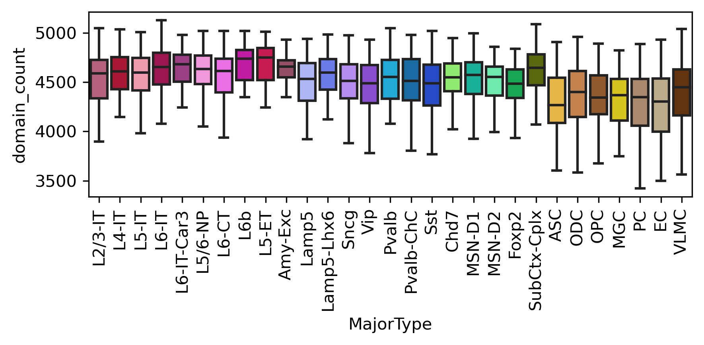
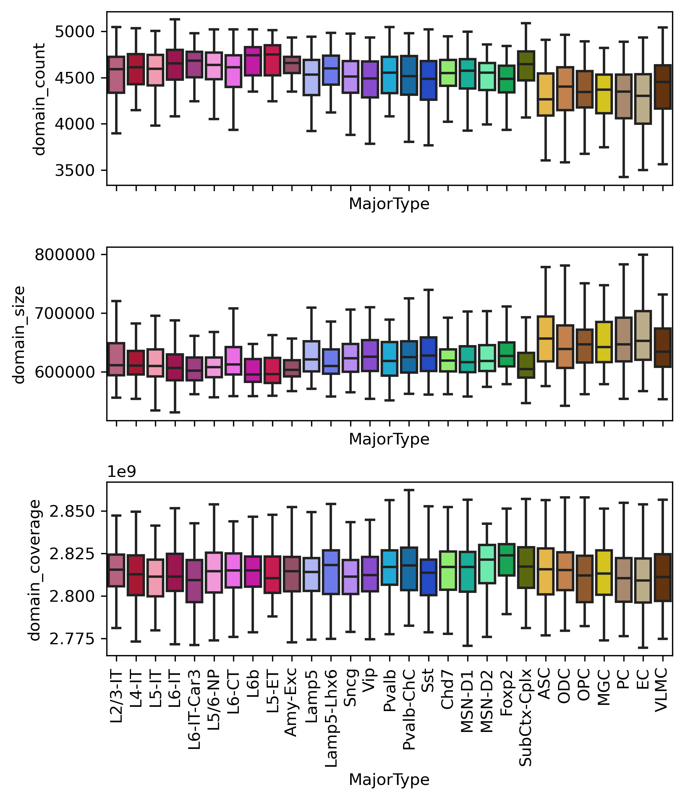

Domain count and size#
import numpy as np
import pandas as pd
from glob import glob
from concurrent.futures import ProcessPoolExecutor, as_completed
import anndata
from scipy.stats import pearsonr, ranksums
import matplotlib as mpl
import matplotlib.pyplot as plt
from matplotlib import cm as cm
import seaborn as sns
mpl.style.use('default')
mpl.rcParams['pdf.fonttype'] = 42
mpl.rcParams['ps.fonttype'] = 42
mpl.rcParams['font.family'] = 'sans-serif'
mpl.rcParams['font.sans-serif'] = 'Helvetica'
import hba_data
ctdict = hba_data.internal.celltype.CellType.majortype_palette()
leg = pd.Index(['L23_IT', 'L4_IT', 'L5_IT', 'L6_IT', 'L6_IT_Car3', 'L56_NP', 'L6_CT', 'L6b', 'L5_ET', 'Amy',
'Lamp5', 'Lamp5_LHX6', 'Sncg', 'Vip', 'Pvalb', 'Pvalb_ChC', 'Sst', 'CHD7',
'MSN_D1', 'MSN_D2', 'Foxp2', 'SubCtx',
'ASC', 'ODC', 'OPC', 'MGC', 'PC', 'EC', 'VLMC'
])
legname = pd.Index(['L2/3-IT', 'L4-IT', 'L5-IT', 'L6-IT', 'L6-IT-Car3', 'L5/6-NP', 'L6-CT', 'L6b', 'L5-ET', 'Amy-Exc',
'Lamp5', 'Lamp5-Lhx6', 'Sncg', 'Vip', 'Pvalb', 'Pvalb-ChC', 'Sst', 'Chd7',
'MSN-D1', 'MSN-D2', 'Foxp2', 'SubCtx-Cplx',
'ASC', 'ODC', 'OPC', 'MGC', 'PC', 'EC', 'VLMC'
])
print(len(leg))
29
indir = '/data/hba/domain_majortype/'
outdir = '/home/jzhou_salk_edu/sky_workdir/hba/domain_majortype/'
res = 25000
sc_border = anndata.read_h5ad(f'{outdir}cell_117540_boundary.h5ad')
sc_border
AnnData object with n_obs × n_vars = 117540 × 102255
obs: 'PassFilter', 'mCCCFrac', 'mCGFrac', 'mCGFracAdj', 'mCHFrac', 'mCHFracAdj', 'FinalmCReads', 'pool', 'Plate', 'plate_relative_read', 'Donor', 'Region', 'tech', 'donor-tech', 'SubType', 'MajorType', 'forloop_SubType', 'forloop_MajorType', 'forloop_Region', 'CisLongContact', 'TransContact', 'Cis/Trans', 'bound_count', 'tsne_0', 'tsne_1'
var: 'chrom', 'start', 'end', 'n_cell'
obsm: 'X_pca', 'X_pca_harmony', 'X_tsne', 'bound_lsi_all', 'bound_u25_tsne', 'bound_u25hm', 'bound_u25hm_tsne'
def compute_domain_size(i):
global res, sc_border
tmp = sc_border.raw.X[i]
tmp = np.repeat(tmp.indices, tmp.data).reshape((-1, 2))
return (tmp[:, 1] - tmp[:, 0]).sum() * res
metadata = pd.read_hdf(f'{outdir}cell_117540_meta.hdf')
metadata
| PassFilter | mCCCFrac | mCGFrac | mCGFracAdj | mCHFrac | mCHFracAdj | FinalmCReads | pool | Plate | plate_relative_read | ... | forloop_SubType | forloop_MajorType | forloop_Region | CisLongContact | TransContact | Cis/Trans | domain_coverage | domain_count | boundary_count | domain_size | |
|---|---|---|---|---|---|---|---|---|---|---|---|---|---|---|---|---|---|---|---|---|---|
| HBA_220218_H1930002_CX47_BNST_3C_1_P1-1-M14-A1 | True | 0.006068 | 0.773828 | 0.772447 | 0.012215 | 0.006185 | 2116936 | hba_m3c16_h1930002_BNST | HBA_220218_H1930002_CX47_BNST_3C_1_P1 | 0.971324 | ... | ASC_Bergemann_0 | NaN | NaN | 278749.0 | 157264.0 | 1.772491 | 2801350000 | 4410.0 | 4857 | 635226.757370 |
| HBA_220218_H1930002_CX47_BNST_3C_1_P1-1-M14-A13 | True | 0.004877 | 0.769910 | 0.768782 | 0.011441 | 0.006596 | 2250650 | hba_m3c16_h1930002_BNST | HBA_220218_H1930002_CX47_BNST_3C_1_P1 | 1.032676 | ... | NaN | NaN | NaN | 335489.0 | 163603.0 | 2.050629 | 2807375000 | 4752.0 | 5265 | 590777.567340 |
| HBA_220218_H1930002_CX47_BNST_3C_1_P1-1-M14-A14 | True | 0.005228 | 0.745918 | 0.744583 | 0.006356 | 0.001134 | 2655450 | hba_m3c16_h1930002_BNST | HBA_220218_H1930002_CX47_BNST_3C_1_P1 | 1.218413 | ... | OPC_0 | OPC | NaN | 353846.0 | 234196.0 | 1.510897 | 2797275000 | 4800.0 | 5313 | 582765.625000 |
| HBA_220218_H1930002_CX47_BNST_3C_1_P1-1-M14-A2 | True | 0.008819 | 0.750491 | 0.748271 | 0.013308 | 0.004529 | 2365072 | hba_m3c16_h1930002_BNST | HBA_220218_H1930002_CX47_BNST_3C_1_P1 | 1.085177 | ... | NaN | NaN | NaN | 324190.0 | 189126.0 | 1.714148 | 2810575000 | 4469.0 | 4889 | 628904.676661 |
| HBA_220218_H1930002_CX47_BNST_3C_1_P1-1-M14-B1 | True | 0.005061 | 0.761122 | 0.759906 | 0.016676 | 0.011674 | 779910 | hba_m3c16_h1930002_BNST | HBA_220218_H1930002_CX47_BNST_3C_1_P1 | 0.357850 | ... | ASC_2 | NaN | NaN | 93768.0 | 57444.0 | 1.632338 | 2787325000 | 3041.0 | 3297 | 916581.716541 |
| ... | ... | ... | ... | ... | ... | ... | ... | ... | ... | ... | ... | ... | ... | ... | ... | ... | ... | ... | ... | ... | ... |
| HBA_211117_H1930002_CX47_FI_3C_1_P8-6-J7-O24 | True | 0.010842 | 0.798236 | 0.796024 | 0.054124 | 0.043756 | 1948656 | hba_m3c11_h1930002_FI | HBA_211117_H1930002_CX47_FI_3C_1_P8 | 0.984126 | ... | Sncg_1 | Sncg | NaN | 246773.0 | 133468.0 | 1.848930 | 2823125000 | 4690.0 | 5181 | 601945.628998 |
| HBA_211117_H1930002_CX47_FI_3C_1_P8-6-J7-P11 | True | 0.012916 | 0.768051 | 0.765016 | 0.062617 | 0.050352 | 2450246 | hba_m3c11_h1930002_FI | HBA_211117_H1930002_CX47_FI_3C_1_P8 | 1.237444 | ... | L6_IT_Car3_1 | L6_IT_Car3 | NaN | 356046.0 | 131529.0 | 2.706977 | 2849325000 | 5063.0 | 5683 | 562774.047008 |
| HBA_211117_H1930002_CX47_FI_3C_1_P8-6-J7-P12 | True | 0.006666 | 0.801151 | 0.799817 | 0.026621 | 0.020089 | 2906150 | hba_m3c11_h1930002_FI | HBA_211117_H1930002_CX47_FI_3C_1_P8 | 1.467688 | ... | Vip_4 | Vip | NaN | 352862.0 | 219220.0 | 1.609625 | 2846425000 | 4978.0 | 5499 | 571800.924066 |
| HBA_211117_H1930002_CX47_FI_3C_1_P8-6-J7-P23 | True | 0.008189 | 0.792329 | 0.790614 | 0.036346 | 0.028389 | 2293534 | hba_m3c11_h1930002_FI | HBA_211117_H1930002_CX47_FI_3C_1_P8 | 1.158300 | ... | Sncg_0 | Sncg | NaN | 268935.0 | 194847.0 | 1.380237 | 2854400000 | 4642.0 | 5151 | 614907.367514 |
| HBA_211117_H1930002_CX47_FI_3C_1_P8-6-J7-P24 | True | 0.010332 | 0.797810 | 0.795699 | 0.053267 | 0.043384 | 2110322 | hba_m3c11_h1930002_FI | HBA_211117_H1930002_CX47_FI_3C_1_P8 | 1.065772 | ... | Sst_5 | Sst | NaN | 282997.0 | 145288.0 | 1.947835 | 2841475000 | 4801.0 | 5292 | 591850.656113 |
117540 rows × 26 columns
ncpu = 20
domain_size, cell_list = [], []
with ProcessPoolExecutor(ncpu) as exe:
future_dict = {}
for i,cell in enumerate(metadata.index):
future = exe.submit(compute_domain_size, i=i)
future_dict[future] = cell
for future in as_completed(future_dict):
cell = future_dict[future]
# print(f'{cell} finished.')
domain_size.append(future.result())
cell_list.append(cell)
domain_size = pd.Series(domain_size, index=cell_list)
metadata['domain_coverage'] = domain_size.copy()
metadata.loc[sc_border.obs.index, 'domain_count'] = sc_border.raw.X.sum(axis=1).A1 / 2
# sc_border.X.data = np.ones(sc_border.X.data.shape)
metadata.loc[sc_border.obs.index, 'boundary_count'] = sc_border.raw.X.getnnz(axis=1)
metadata['domain_size'] = metadata['domain_coverage'] / metadata['domain_count']
legnonn = ['ASC', 'ODC', 'OPC', 'MGC', 'PC', 'EC', 'VLMC']
print(np.median(metadata.loc[~metadata['MajorType'].isin(legnonn), 'domain_count']),
np.median(metadata.loc[metadata['MajorType'].isin(legnonn), 'domain_count']))
4815.0 4309.0
ranksums(metadata.loc[~metadata['MajorType'].isin(legnonn), 'domain_count'],
metadata.loc[metadata['MajorType'].isin(legnonn), 'domain_count'])
RanksumsResult(statistic=193.64366840482205, pvalue=0.0)
fig, axes = plt.subplots(3, 1, figsize=(6,7), sharex='all', dpi=300)
ax = axes[0]
sns.boxplot(data=metadata, x='MajorType', y='domain_count', order=leg, showfliers=False, palette=ctdict, ax=ax)
ax = axes[1]
sns.boxplot(data=metadata, x='MajorType', y='domain_size', order=leg, showfliers=False, palette=ctdict, ax=ax)
ax = axes[2]
sns.boxplot(data=metadata, x='MajorType', y='domain_coverage', order=leg, showfliers=False, palette=ctdict, ax=ax)
ax.set_xticklabels(legname, rotation=90)
plt.tight_layout()
# plt.savefig(f'cell_{sc_border.shape[0]}_majortype_domain_boxplot.pdf', transparent=True, dpi=300)
findfont: Font family ['sans-serif'] not found. Falling back to DejaVu Sans.
findfont: Generic family 'sans-serif' not found because none of the following families were found: Helvetica
adata = anndata.read_h5ad('/home/jzhou_salk_edu/sky_workdir/hba/rna_majortype/cell_29000_rna.h5ad')
adata
AnnData object with n_obs × n_vars = 29000 × 27294
obs: 'Class', 'Supercluster', 'Clusters', 'Age', 'Donor', 'Sex', 'Tissue', 'MajorType', 'Prob', 'TotalUMI', 'tsne_0', 'tsne_1'
var: 'ncell', 'mean', 'std', 'gene_name', 'chrom', 'start', 'end'
uns: 'log1p'
obsm: 'X_pca', 'X_tsne', 'pca_all', 'u50_tsne'
tmp = adata.obs.groupby('MajorType')['TotalUMI']
data = pd.DataFrame([tmp.mean(), tmp.std() / np.sqrt(tmp.count())],
index=['TotalUMI_mean', 'TotalUMI_sem']).T
tmp = metadata.groupby('MajorType')['domain_count']
data['domain_count_mean'] = tmp.mean()
data['domain_count_sem'] = tmp.std() / np.sqrt(tmp.count())
tmp = metadata.groupby('MajorType')['domain_size']
data['domain_size_mean'] = tmp.mean()
data['domain_size_sem'] = tmp.std() / np.sqrt(tmp.count())
data['color'] = data.index.map(ctdict)
print(pearsonr(data['TotalUMI_mean'], data['domain_count_mean']))
print(pearsonr(data['TotalUMI_mean'], data['domain_size_mean']))
(0.8848877901822902, 1.8740488558868936e-10)
(-0.8639479580893032, 1.5727790131258659e-09)
from scipy.stats import pearsonr
fig, axes = plt.subplots(2, 1, figsize=(3,6), dpi=300, sharex='all')
ax = axes[0]
ax.scatter(data['TotalUMI_mean'], data['domain_count_mean'], c=data['color'], edgecolor='none')
# ax.errorbar(x=data['TotalUMI_mean'], y=data['domain_count_mean'],
# xerr=data['TotalUMI_sem'], yerr=data['domain_count_sem'],
# fmt='none', ecolor='k')
ax.set_xlabel('Average Total UMI')
ax.set_ylabel('Average Domain Count')
ax = axes[1]
ax.scatter(data['TotalUMI_mean'], data['domain_size_mean'], c=data['color'], edgecolor='none')
# ax.errorbar(x=data['TotalUMI_mean'], y=data['domain_size_mean'],
# xerr=data['TotalUMI_sem'], yerr=data['domain_size_sem'],
# fmt='none', ecolor='k')
ax.set_xlabel('Average Total UMI')
ax.set_ylabel('Average Domain Size')
# plt.savefig('UMIvsDomain.pdf', transparent=True)
Text(0, 0.5, 'Average Domain Size')
decay = pd.concat([pd.read_hdf(xx, key='data') for xx in glob(f'{outdir}../decay/cell_*_decay.hdf5')], axis=0)
decay = decay.loc[decay.index & metadata.index]
# metadata['short'] = decay.loc[:, (decay.columns > 50) & (decay.columns < 77)].sum(axis=1)
metadata['short'] = decay.loc[:, (decay.columns < 87)].sum(axis=1)
metadata['Neuron'] = metadata['MajorType'].isin(leg[:22])
metadata['Neuron'].value_counts()
False 67597
True 49943
Name: Neuron, dtype: int64
print(np.percentile(metadata.loc[metadata['Neuron'], 'short'], 5), np.percentile(metadata.loc[~metadata['Neuron'], 'short'], 5))
print(np.percentile(metadata.loc[metadata['Neuron'], 'short'], 95), np.percentile(metadata.loc[~metadata['Neuron'], 'short'], 95))
100445.1 69650.8
299780.8999999999 223265.99999999997
dsmeta = []
for i in range(100):
ll = 100000 + 1000 * i
rr = 100000 + 1000 * (i+1)
data = metadata[(metadata['short']>=ll) & (metadata['short']<rr)]
# n = data.groupby('MajorType')['short'].count().min()
n = 1
dsmeta.append(data.groupby('MajorType').sample(n=n))
dsmeta = pd.concat(dsmeta, axis=0)
fig, ax = plt.subplots(figsize=(6,3), sharex='all', dpi=300)
sns.boxplot(data=dsmeta, x='MajorType', y='domain_count', order=leg, showfliers=False, palette=ctdict, ax=ax)
ax.set_xticklabels(legname, rotation=90)
plt.tight_layout()

sns.histplot(data=dsmeta, x='short', hue='Neuron', bins=100)
<AxesSubplot:xlabel='short', ylabel='Count'>
fig, axes = plt.subplots(3, 1, figsize=(6,7), sharex='all', dpi=300)
ax = axes[0]
sns.boxplot(data=dsmeta, x='MajorType', y='domain_count', order=leg, showfliers=False, palette=ctdict, ax=ax)
ax = axes[1]
sns.boxplot(data=dsmeta, x='MajorType', y='domain_size', order=leg, showfliers=False, palette=ctdict, ax=ax)
ax = axes[2]
sns.boxplot(data=dsmeta, x='MajorType', y='domain_coverage', order=leg, showfliers=False, palette=ctdict, ax=ax)
ax.set_xticklabels(legname, rotation=90)
plt.tight_layout()
# plt.savefig(f'cell_{dsmeta.shape[0]}_dowmsample_majortype_domain_boxplot.pdf', transparent=True, dpi=300)

ranksums(dsmeta.loc[dsmeta['Neuron'], 'domain_count'], dsmeta.loc[~dsmeta['Neuron'], 'domain_count'])
RanksumsResult(statistic=16.42898214725163, pvalue=1.1863351350444807e-60)
tmp = adata.obs.groupby('MajorType')['TotalUMI']
data = pd.DataFrame([tmp.mean(), tmp.std() / np.sqrt(tmp.count())],
index=['TotalUMI_mean', 'TotalUMI_sem']).T
tmp = dsmeta.groupby('MajorType')['domain_count']
data['domain_count_mean'] = tmp.mean()
data['domain_count_sem'] = tmp.std() / np.sqrt(tmp.count())
tmp = dsmeta.groupby('MajorType')['domain_size']
data['domain_size_mean'] = tmp.mean()
data['domain_size_sem'] = tmp.std() / np.sqrt(tmp.count())
data['color'] = data.index.map(ctdict)
print(pearsonr(data['TotalUMI_mean'], data['domain_count_mean']))
print(pearsonr(data['TotalUMI_mean'], data['domain_size_mean']))
(0.8872834649340685, 1.4316831184652255e-10)
(-0.8711131318194102, 7.919297278100225e-10)
from scipy.stats import pearsonr
fig, axes = plt.subplots(2, 1, figsize=(3,6), dpi=300, sharex='all')
ax = axes[0]
ax.scatter(data['TotalUMI_mean'], data['domain_count_mean'], c=data['color'], edgecolor='none')
# ax.errorbar(x=data['TotalUMI_mean'], y=data['domain_count_mean'],
# xerr=data['TotalUMI_sem'], yerr=data['domain_count_sem'],
# fmt='none', ecolor='k')
ax.set_xlabel('Average Total UMI')
ax.set_ylabel('Average Domain Count')
ax = axes[1]
ax.scatter(data['TotalUMI_mean'], data['domain_size_mean'], c=data['color'], edgecolor='none')
# ax.errorbar(x=data['TotalUMI_mean'], y=data['domain_size_mean'],
# xerr=data['TotalUMI_sem'], yerr=data['domain_size_sem'],
# fmt='none', ecolor='k')
ax.set_xlabel('Average Total UMI')
ax.set_ylabel('Average Domain Size')
# plt.savefig('UMIvsDomain.pdf', transparent=True)
Text(0, 0.5, 'Average Domain Size')